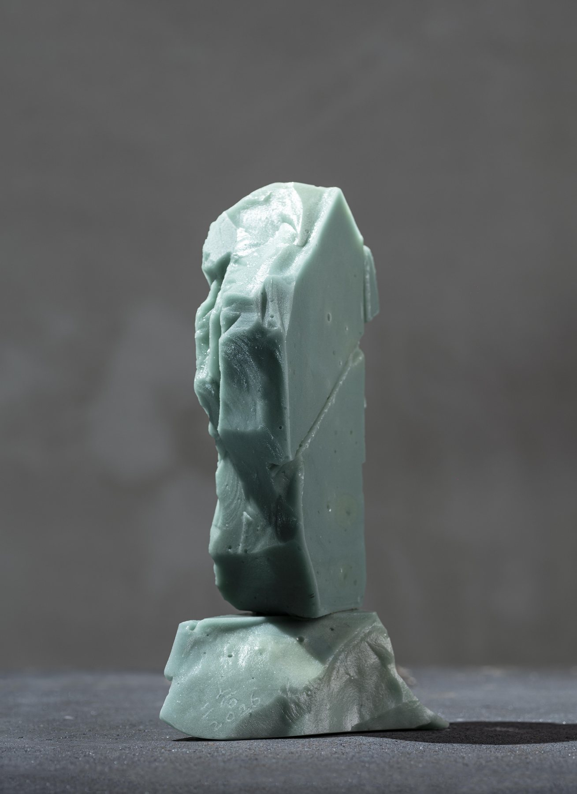
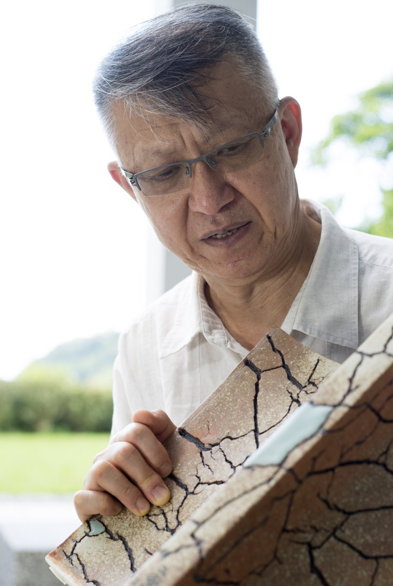

林振龍Lin Chen-Long · Er-Gu
Born in Nantou in 1955, founder of the Tsu Yang Kiln and the Jingshan Pottery Studio. For over forty years Lin has worked in clay and glaze, setting the geometry of Western form beside the celadon, copper-red and Jun glazes of the East, and keeping a certain warmth inside the rational structure.


"He draws on a hundred schools and makes them his own; he learns from nature and renders it anew."
Liou Jenn-Jou · Professor, National Taiwan University of Arts

About Lin Chen-Long
He began at the Han Tang ceramics factory in 1973, studied under Lin Pao-Chia from 1978, and founded the Tsu Yang Kiln in Tucheng in 1979. Over three decades more than two hundred painters worked on clay there, while Lin's own practice moved from Firing Clay, Firing Heart in 1989 to the recent Stone Texture and Glaze Carving series.